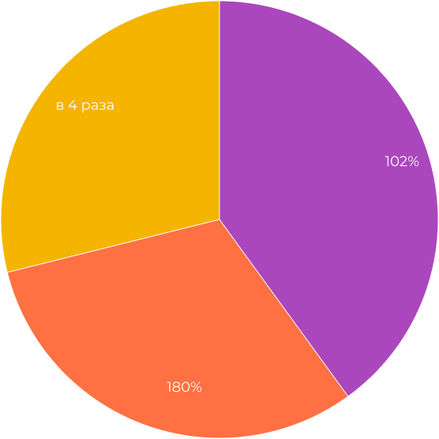

<div style="background-color: black">
  <section class="case-data section-padding container">
    <h2 class="title">Выполненные работы по проекту</h2>
    <div class="case-data__main">
      <div class="case-data__name">
        <div class="case-data__avatar">
          
        </div>
        <div class="case-data__info">
          <p>Клиент:</p>
          <p>Интернет-магазин мужской одежды</p>
          <a href="#">sami-s-sharami.ru </a>
        </div>
      </div>
      <ul class="case-data__list">
        <li>Увеличение конверсии</li>
        <li>Рост продаж</li>
        <li>Постоянная работа над сайтом</li>
        <li>SEO-продвижение</li>
      </ul>
      <p class="text">Сайт получал трафик исключительно из рекламных источников, владельцы проекта решили проработать
        канал SEO</p>
      <p class="case-data__subtitle">Что мы сделали:</p>
      <ul class="case-data__list">
        <li>Подготовили семантическое ядро: кластеризацию, распределение по посадочным страницам, расширение ядра.</li>
        <li>Поработали с контентом: создали тексты на сайт, мета-теги, оптимизировали изображения, убрали дубликаты
          страниц, доработали содержимое карточек товаров и т.д.</li>
        <li>Настроили файлы robots.txt и htaccess</li>
        <li>Оптимизировали все мета-теги сайта</li>
        <li>Провели внешнюю оптимизацию</li>
        <li>Устранили проблемы с дублями страниц</li>
        <li>Устранили проблемы с дублями страниц</li>
        <li class="case-data__fav">Веб-аналитика, для повышения эффективности продвижения сайта </li>
        <li>Закрыли служебные страницы от индексации</li>
        <li>Настроили xml карту сайта </li>
        <li>Создали и настроили страницу 404 </li>
        <li>Устранили дубли страниц </li>
      </ul>
      <p class="case-data__subtitle">Результаты:</p>
      <div class="case-data__results">
        <div class="case-data__pento">
          
        </div>
        <div class="case-data__tabs">
          <span>Рост аудитории</span>
          <span>Рост запросов в выдаче</span>
          <span>Увеличили количество запросов в топ 10</span>
        </div>
      </div>
    </div>
  </section>
</div>